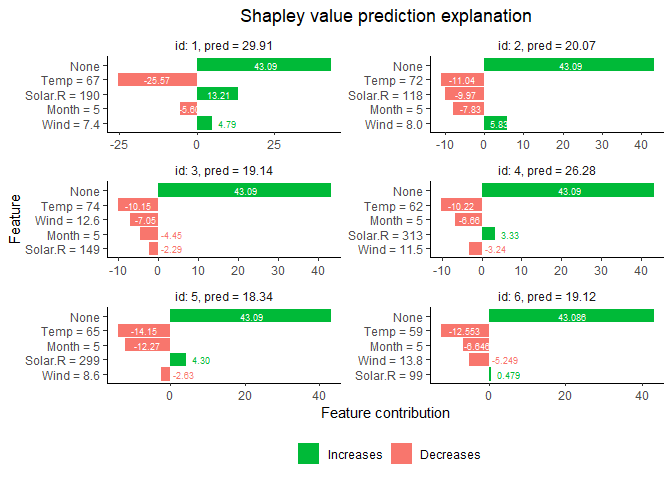

Brief NEWS
Breaking change (June 2023)
As of version 0.2.3.9000, the development version of shapr (master branch on GitHub from June 2023) has been severely restructured, introducing a new syntax for explaining models, and thereby introducing a range of breaking changes. This essentially amounts to using a single function (explain()) instead of two functions (shapr() and explain()). The CRAN version of shapr (v0.2.2) still uses the old syntax. See the NEWS for details. The examples below uses the new syntax. Here is a version of this README with the syntax of the CRAN version (v0.2.2).
Introduction
The most common machine learning task is to train a model which is able to predict an unknown outcome (response variable) based on a set of known input variables/features. When using such models for real life applications, it is often crucial to understand why a certain set of features lead to exactly that prediction. However, explaining predictions from complex, or seemingly simple, machine learning models is a practical and ethical question, as well as a legal issue. Can I trust the model? Is it biased? Can I explain it to others? We want to explain individual predictions from a complex machine learning model by learning simple, interpretable explanations.
Shapley values is the only prediction explanation framework with a solid theoretical foundation (Lundberg and Lee (2017)). Unless the true distribution of the features are known, and there are less than say 10-15 features, these Shapley values needs to be estimated/approximated. Popular methods like Shapley Sampling Values (Štrumbelj and Kononenko (2014)), SHAP/Kernel SHAP (Lundberg and Lee (2017)), and to some extent TreeSHAP (Lundberg, Erion, and Lee (2018)), assume that the features are independent when approximating the Shapley values for prediction explanation. This may lead to very inaccurate Shapley values, and consequently wrong interpretations of the predictions. Aas, Jullum, and Løland (2021) extends and improves the Kernel SHAP method of Lundberg and Lee (2017) to account for the dependence between the features, resulting in significantly more accurate approximations to the Shapley values. See the paper for details.
This package implements the methodology of Aas, Jullum, and Løland (2021).
The following methodology/features are currently implemented:
- Native support of explanation of predictions from models fitted with the following functions
stats::glm,stats::lm,ranger::ranger,xgboost::xgboost/xgboost::xgb.trainandmgcv::gam. - Accounting for feature dependence
- assuming the features are Gaussian (
approach = 'gaussian', Aas, Jullum, and Løland (2021)) - with a Gaussian copula (
approach = 'copula', Aas, Jullum, and Løland (2021)) - using the Mahalanobis distance based empirical (conditional) distribution approach (
approach = 'empirical', Aas, Jullum, and Løland (2021)) - using conditional inference trees (
approach = 'ctree', Redelmeier, Jullum, and Aas (2020)). - using the endpoint match method for time series (
approach = 'timeseries', Jullum, Redelmeier, and Aas (2021)) - using the joint distribution approach for models with purely cateogrical data (
approach = 'categorical', Redelmeier, Jullum, and Aas (2020)) - assuming all features are independent (
approach = 'independence', mainly for benchmarking)
- assuming the features are Gaussian (
- Combining any of the above methods.
- Explain forecasts from time series models at different horizons with
explain_forecast()(R only) - Batch computation to reduce memory consumption significantly
- Parallelized computation using the future framework. (R only)
- Progress bar showing computation progress, using the
progressrpackage. Must be activated by the user. - Optional use of the AICc criterion of Hurvich, Simonoff, and Tsai (1998) when optimizing the bandwidth parameter in the empirical (conditional) approach of Aas, Jullum, and Løland (2021).
- Functionality for visualizing the explanations. (R only)
- Support for models not supported natively.
Note the prediction outcome must be numeric. All approaches except approach = 'categorical' works for numeric features, but unless the models are very gaussian-like, we recommend approach = 'ctree' or approach = 'empirical', especially if there are discretely distributed features. When the models contains both numeric and categorical features, we recommend approach = 'ctree'. For models with a smaller number of categorical features (without many levels) and a decent training set, we recommend approach = 'categorical'. For (binary) classification based on time series models, we suggest using approach = 'timeseries'. To explain forecasts of time series models (at different horizons), we recommend using explain_forecast() instead of explain(). The former has a more suitable input syntax for explaining those kinds of forecasts. See the vignette for details and further examples.
Unlike SHAP and TreeSHAP, we decompose probability predictions directly to ease the interpretability, i.e. not via log odds transformations.
Installation
To install the current stable release from CRAN (note, using the old explanation syntax), use
install.packages("shapr")To install the current development version (with the new explanation syntax), use
remotes::install_github("NorskRegnesentral/shapr")If you would like to install all packages of the models we currently support, use
remotes::install_github("NorskRegnesentral/shapr", dependencies = TRUE)If you would also like to build and view the vignette locally, use
remotes::install_github("NorskRegnesentral/shapr", dependencies = TRUE, build_vignettes = TRUE)
vignette("understanding_shapr", "shapr")You can always check out the latest version of the vignette here.
Example
shapr supports computation of Shapley values with any predictive model which takes a set of numeric features and produces a numeric outcome.
The following example shows how a simple xgboost model is trained using the airquality dataset, and how shapr explains the individual predictions.
library(xgboost)
library(shapr)
data("airquality")
data <- data.table::as.data.table(airquality)
data <- data[complete.cases(data), ]
x_var <- c("Solar.R", "Wind", "Temp", "Month")
y_var <- "Ozone"
ind_x_explain <- 1:6
x_train <- data[-ind_x_explain, ..x_var]
y_train <- data[-ind_x_explain, get(y_var)]
x_explain <- data[ind_x_explain, ..x_var]
# Looking at the dependence between the features
cor(x_train)
#> Solar.R Wind Temp Month
#> Solar.R 1.0000000 -0.1243826 0.3333554 -0.0710397
#> Wind -0.1243826 1.0000000 -0.5152133 -0.2013740
#> Temp 0.3333554 -0.5152133 1.0000000 0.3400084
#> Month -0.0710397 -0.2013740 0.3400084 1.0000000
# Fitting a basic xgboost model to the training data
model <- xgboost(
data = as.matrix(x_train),
label = y_train,
nround = 20,
verbose = FALSE
)
# Specifying the phi_0, i.e. the expected prediction without any features
p0 <- mean(y_train)
# Computing the actual Shapley values with kernelSHAP accounting for feature dependence using
# the empirical (conditional) distribution approach with bandwidth parameter sigma = 0.1 (default)
explanation <- explain(
model = model,
x_explain = x_explain,
x_train = x_train,
approach = "empirical",
prediction_zero = p0
)
#> Note: Feature classes extracted from the model contains NA.
#> Assuming feature classes from the data are correct.
#> Setting parameter 'n_batches' to 2 as a fair trade-off between memory consumption and computation time.
#> Reducing 'n_batches' typically reduces the computation time at the cost of increased memory consumption.
# Printing the Shapley values for the test data.
# For more information about the interpretation of the values in the table, see ?shapr::explain.
print(explanation$shapley_values)
#> none Solar.R Wind Temp Month
#> 1: 43.08571 13.2117337 4.785645 -25.57222 -5.599230
#> 2: 43.08571 -9.9727747 5.830694 -11.03873 -7.829954
#> 3: 43.08571 -2.2916185 -7.053393 -10.15035 -4.452481
#> 4: 43.08571 3.3254595 -3.240879 -10.22492 -6.663488
#> 5: 43.08571 4.3039571 -2.627764 -14.15166 -12.266855
#> 6: 43.08571 0.4786417 -5.248686 -12.55344 -6.645738
# Finally we plot the resulting explanations
plot(explanation)
See the vignette for further examples.
Contribution
All feedback and suggestions are very welcome. Details on how to contribute can be found here. If you have any questions or comments, feel free to open an issue here.
Please note that the ‘shapr’ project is released with a Contributor Code of Conduct. By contributing to this project, you agree to abide by its terms.